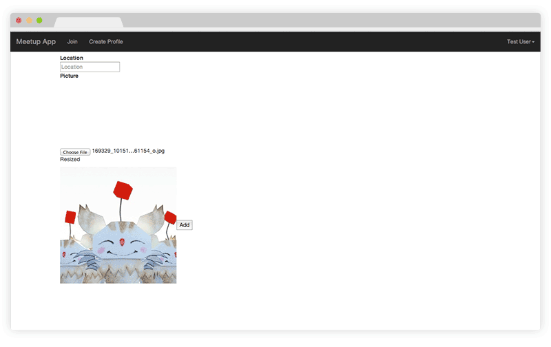
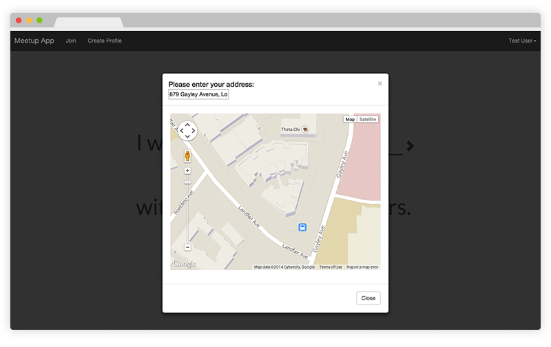
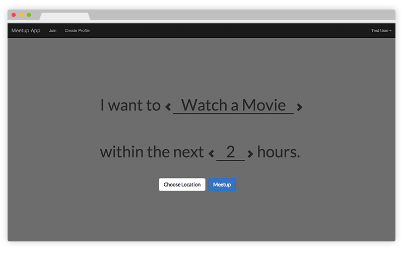
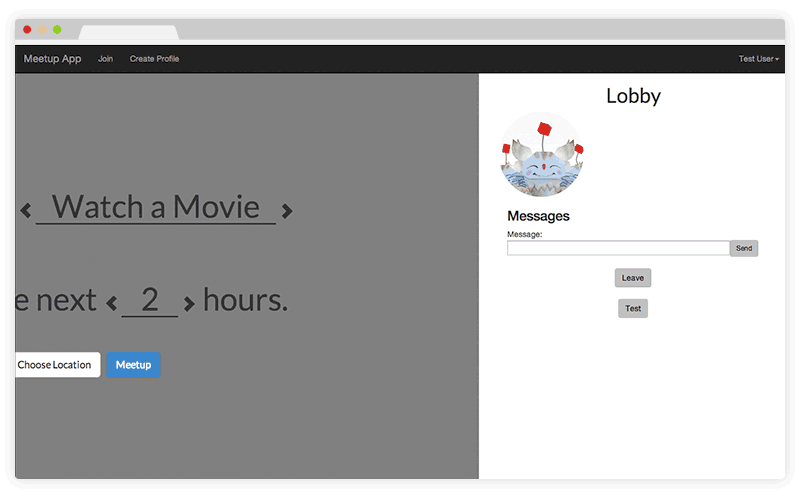

In the past ten years we have seen technology bring people together in a virtual space, Meetup attempts to do the opposite and bring people together in real life. You can think of it like video game matchmaking, but in real life. For instance, if you are new to a city or just want to meet someone new, and decide that you would like to go get dinner within the next 3 hours, just log on to the website, specify what you would like to do and you will be matched with someone looking to do the same.
Users can sign up and upload their own images.
The site will automatically scale the image and mask it into a circle.
Next, the user will be asked to specify their location. The HTML5 geolocation API can be used to locate users without having them explicitly type in their address.
Then, the user can decide what activity and what time frame they would like the do said activity in.
Finally, based on the activity, time, and location (the location not yet implemented), the user will be matched up into a chatroom with other users who can then determine a place to meet.
You can give the webapp a try by clicking here.
Note that you would probably need to need to load up two browsers and match the users by yourself.
Meetup app is built on top of the MEAN stack with Socket.IO added for chat and the realtime matchmaking.
For this project, I am working on a team with 2 other people. I am primarily responsible for the code and visual aspects.